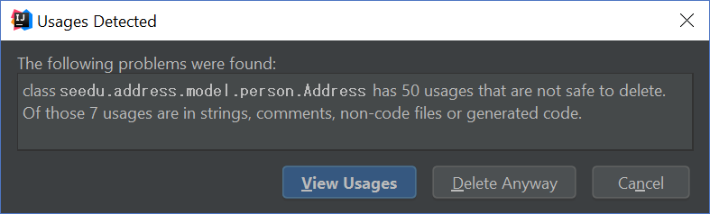
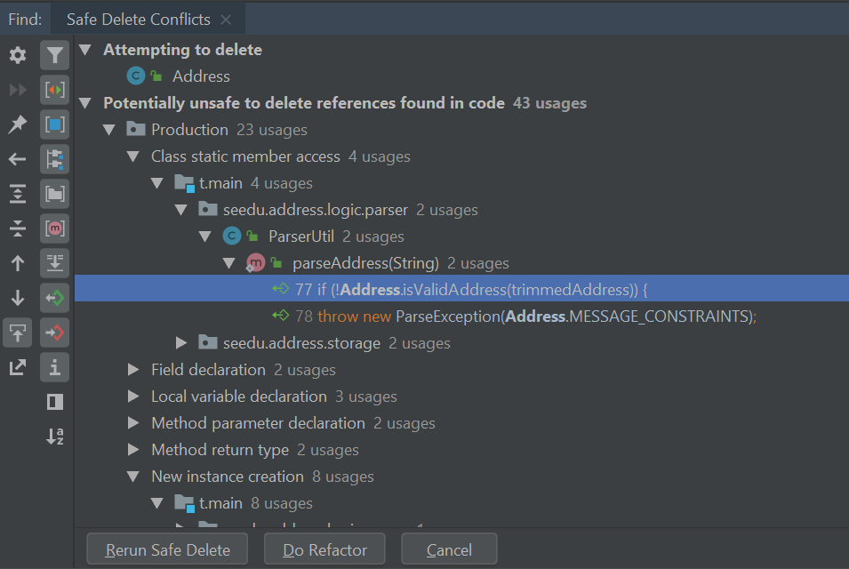
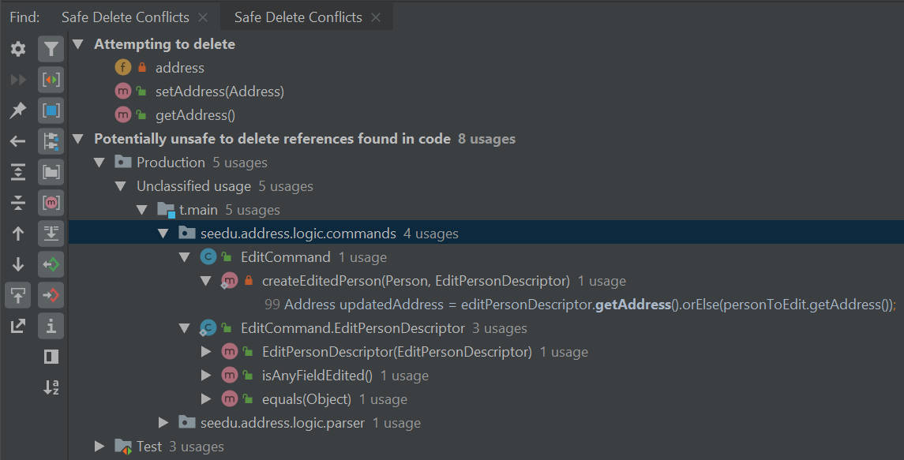
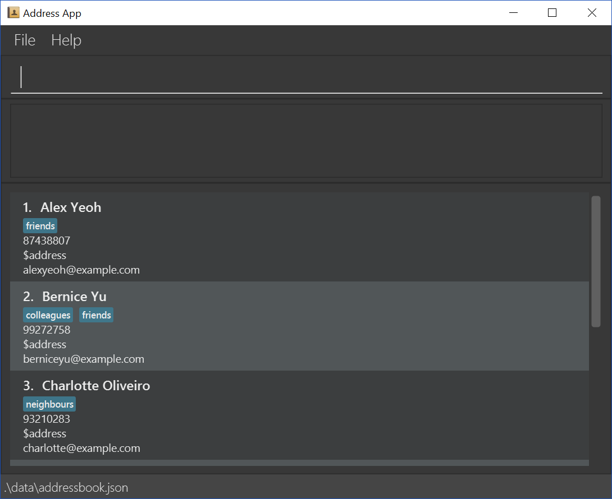

Perfection is achieved, not when there is nothing more to add, but when there is nothing left to take away.
— Antoine de Saint-Exupery
When working on an existing code base, you will most likely find that some features that are no longer necessary.
This tutorial aims to give you some practice on such a code ‘removal’ activity by removing the address field from Student class.
remark command tutorial already, you should know where the code had to be updated to add the field remark. From that experience, you can deduce where the code needs to be changed to remove that field too. The removing of the address field can be done similarly.
AddressIntelliJ IDEA provides a refactoring tool that can identify most parts of a removal easily. Let’s try to use it as much as we can.
The address field in Student is actually an instance of the seedu.address.model.student.Address class. Since removing the Address class will break the application, we start by identifying Address’s usages. This allows us to see code that depends on Address to function properly and edit them on a case-by-case basis. Right-click the Address class and select Refactor > Safe Delete through the menu.
Search in comments and strings and Search for text occurrences
Choose to View Usages and you should be presented with a list of Safe Delete Conflicts. These conflicts describe locations in which the Address class is used.

Remove usages of Address by performing Safe Deletes on each entry i.e., double-click on the entry (which takes you to the code in concern, right-click on that entity, and choose Refactor -> Safe delete as before). You will need to exercise discretion when removing usages of Address. Functions like ParserUtil#parseAddress() can be safely removed but its usages must be removed as well. Other usages like in EditStudentDescriptor may require more careful inspection.
Let’s try removing references to Address in EditStudentDescriptor.
Safe delete the field address in EditStudentDescriptor.
Select Yes when prompted to remove getters and setters.
Select View Usages again.

Remove the usages of address and select Do refactor when you are done.
address field from the Student class will require you to modify its constructor.
Repeat the steps for the remaining usages of Address
After you are done, verify that the application still works by compiling and running it again.
Unfortunately, there are usages of Address that IntelliJ IDEA cannot identify. You can find them by searching for instances of the word address in your code (Edit > Find > Find in path).
Places of interest to look out for would be resources used by the application. main/resources contains images and fxml files used by the application and test/resources contains test data. For example, there is a $address in each StudentCard that has not been removed nor identified.

A quick look at the StudentCard class and its fxml file quickly reveals why it slipped past the automated refactoring.
StudentCard.java
...
@FXML
private Label address;
...
StudentCard.fxml
...
<Label fx:id="phone" styleClass="cell_small_label" text="\$phone" />
<Label fx:id="address" styleClass="cell_small_label" text="\$address" />
<Label fx:id="email" styleClass="cell_small_label" text="\$email" />
...
After removing the Label, we can proceed to formally test our code. If everything went well, you should have most of your tests pass. Fix any remaining errors until the tests all pass.
At this point, your application is working as intended and all your tests are passing. What’s left to do is to clean up references to Address in test data and documentation.
In src/test/data/, data meant for testing purposes are stored. While keeping the address field in the json files does not cause the tests to fail, it is not good practice to let cruft from old features accumulate.
invalidStudentAddressBook.json:
{
"students": [ {
"name": "Student with invalid name field: Ha!ns Mu@ster",
"phone": "9482424",
"email": "hans@example.com",
"address": "4th street"
} ]
}
You can go through each individual json file and manually remove the address field.